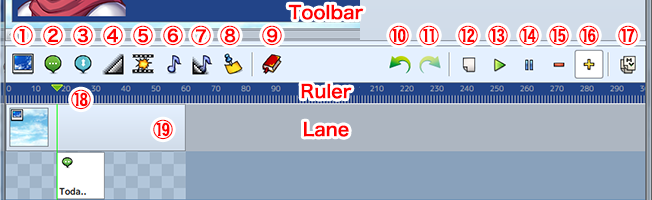
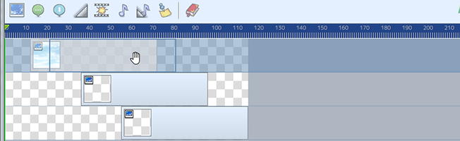
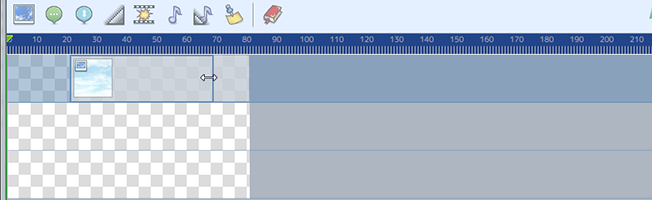
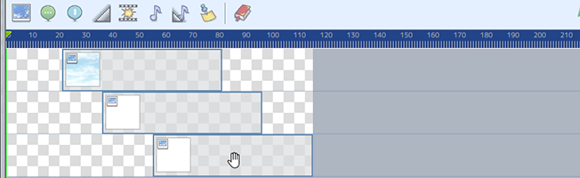

时间线
在时间线上，所有事件都可以使用时间作为轴来安排。
组件说明

工具栏
在时间线上添加各种事件。参照 [事件类型] 有关每种事件的详细信息。
- ① 显示图片事件
- ② 显示文本事件
- ③ 显示滚动文本事件
- ④ 淡化屏幕事件
- ⑤ 屏幕事件
- ⑥ 音频事件
- ⑦ 淡出音频事件
- ⑧ 标记
- ⑨ 预设
工具栏
对时间线进行编辑。
- ⑩ 撤销
- ⑪ 取消撤销
- ⑫ 新建时间线
- ⑬ 播放
- 播放事件的预览。
- ⑭ 停止
- 停止事件的预览。
- ⑮ 缩小
- 缩小时间线
- ⑯ 放大
- 放大时间线
- ⑰ 拷贝为事件
- 将时间线作为mv事件复制到剪贴板。
刻度尺
- ⑱ 光标
- 用光标拖动来更改事件起点、标记插入点或预览位置。
时间线
- ⑲ 事件块
- 可以放置事件块，通过拖动来移动事件。
时间线操作
- 移动事件
-

单击某个事件，然后拖动以移动该事件。
- C更改事件的长度
-

拖动符合条件的事件的任一端以更改其长度。
- 多事件选择
-

单击事件时按住SHIFT键选择多个事件。